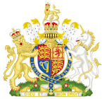

Elizabeth Alexandra Mary

| - | Z Bożej łaski królowa Zjednoczonego Królestwa Wielkiej Brytanii i Irlandii Północnej oraz innych jej posiadłości i terytoriów, głowa Wspólnoty, obrończyni wiary | - |
|
|
Królowa Zjednoczonego Królestwa i pozostałych Królestw Wspólnoty | |
|  | ||
| Królowa Zjednoczonego Królestwa i pozostałych Królestw Wspólnoty | ||
| Okres | od 6 lutego 1952 do 8 września 2022 | |
| Koronacja | 2 czerwca 1953 | |
| Poprzednik | Jerzy VI | |
| Następca | Karol III |
Elżbieta II (ang. Elizabeth Alexandra Mary; ur.
21 kwietnia
1926
w Londynie, zm. 8 września 2022 w Balmoral[2]) – królowa Wielkiej Brytanii z dynastii
Windsorów
od 6 lutego 1952 (koronowana 2 czerwca 1953) do 8 września 2022, córka króla Jerzego VI i
jego małżonki, Elżbiety Bowes-Lyon.
Oprócz godności królowej Zjednoczonego Królestwa Wielkiej Brytanii i Irlandii Północnej była również głową
14 innych
państw: Antigui i Barbudy, Australii, Bahamów, Belize, Grenady, Kanady, Jamajki,
Nowej Zelandii, Papui-Nowej Gwinei, Saint Kitts i Nevis, Saint Lucia, Saint Vincent i Grenadyn, Tuvalu i
Wysp Salomona,
które razem z Wielką Brytanią mają status tzw. Commonwealth realm. Liczba państw, w których panowała
Elżbieta II zmieniała się podczas jej panowania. Wszystkich państw, które uznawały ją za głowę państwa było
33.
Od 9 września 2015 królowa Elżbieta II była najdłużej panującym monarchą Wielkiej Brytanii; pobiła rekord
królowej Wiktorii (63 lata, 7 miesięcy i 2 dni)[3], której była praprawnuczką. Od 13 października
2016 była
najdłużej panującą żyjącą głową państwa na świecie. Wcześniej tytuł ten przysługiwał Ramie IX – królowi
Tajlandii, który rządził od 1946 do swojej śmierci w 2016. Od 12 czerwca 2022 była drugim po Ludwiku XIV
najdłużej panującym monarchą na świecie, wyprzedzając króla Tajlandii, który urząd sprawował 70 lat i 126
dni[4].
W 1952 zdobyła tytuł Człowieka Roku magazynu Time.
Urodziła się poprzez cięcie cesarskie[5] 21 kwietnia 1926 o godz. 2:40 GMT w domu przy 17 Bruton Street w dzielnicy Mayfair w Londynie[6]. Była córką księcia Alberta z Yorku, drugiego syna urzędującego króla Jerzego V, i księżnej Yorku Elżbiety Bowes-Lyon[7][8]. Świadkiem jej narodzin był minister spraw wewnętrznych William Joynson-Hicks, który kontrolował, by podczas porodu nie podmieniono noworodka na inne dziecko[9]. W momencie narodzin Elżbieta zajmowała trzecie miejsce w linii sukcesji, po księciu Walii Edwardzie i swoim ojcu[5]. 29 maja 1926 została ochrzczona wodą z Jordanu w kaplicy Buckingham Palace[10] przez anglikańskiego arcybiskupa Yorku, Cosma Langa[11]. Jej rodzicami chrzestnymi byli: król Jerzy V, królowa Maria, księżniczka królewska Maria Windsor, książę Artur, lord Claude Bowes-Lyon oraz Mary Elphinstone[12]. Elżbieta Aleksandra Maria pierwsze imię otrzymała po matce, drugie po prababce (królowej Aleksandrze), a trzecie po babce (królowej Marii)[10]. W młodości była nazywana przez najbliższych „Lilibet”, ponieważ nie potrafiła poprawnie wymówić swojego imienia w języku angielskim – „Elizabeth”[7][10]. Była opisywana przez swoich biografów jako spokojne, posłuszne, mało spontaniczne i skłonne do kontrolowania swoich emocji dziecko[13], od najmłodszych lat była przygotowywana do objęcia funkcji królowej[14]. Miała dobre relacje ze swoim dziadkiem i ówczesnym królem, Jerzym V[15]. W 1929 na prośbę króla została ściągnięta do Bognor Regis, aby pomóc mu w powrocie do zdrowia po operacji płuc[15]. Jej matka od najmłodszych lat córki dbała o jej popularność w mediach – gdy Elżbieta miała trzy lata, jej zdjęcie znalazło się na okładce magazynu „Times”, ponadto wizerunek księżniczki drukowany był na broszurach, ona sama była też bohaterką artykułów prasowych[16], oprócz tego zaczęto produkować pamiątki z jej podobizną, a gdy miała cztery lata, w Muzeum Figur Woskowych Madame Toussand umieszczono figurę dziewczynki[17]. W 1930 urodziła się jej siostra, Małgorzata Windsor[15]. Dzieciństwo spędziła na Piccadilly Road 145, gdzie zamieszkali jej rodzice[16]. Wychowywała się z dala od rówieśników, co miało ją uchronić przed przypadkowymi znajomościami[18] oraz dziecięcymi chorobami[19]. Ze względu na izolowanie jej od społeczeństwa stała się osobą nieśmiałą[20]. Jedyną bliską jej koleżanką w tym okresie była młodsza od niej o kilka lat Sonia Graham-Hodgson, z którą utrzymywała regularny kontakt aż do śmierci kobiety w 2012[18]. Wychowaniem Elżbiety zajmowała się niania Clara Cooper Knight[17] oraz garderobiana Margaret MacDonald, nazywana przez nią „Bobo”[21], która później została pokojówką królowej[22]. Edukacją księżniczki zajmowała się guwernantka Marion Crawford[7][23].
Kiedy Elżbieta miała 10 lat, w 1936 zmarł jej dziadek, król Jerzy V[24]. Tron objął jej stryj, książę Walii, Edward VIII, który jednak 11 grudnia 1936 abdykował, nie mogąc poślubić dwukrotnie rozwiedzionej Amerykanki Wallis Simpson[25]. Następnym królem został jej ojciec, Jerzy VI[25], a Elżbieta zajęła pierwsze miejsce w linii sukcesji[26]. Po koronacji ojca zamieszkała w Buckingham Palace[18]. W wieku 13 lat podjęła naukę m.in. konstytucji Wielkiej Brytanii u Henry’ego Martena, wykładowcy Eton College[27], poza tym uczestniczyli u boku ojca w licznych spotkaniach z wysoko postawionymi politykami i urzędnikami[28]. Po wybuchu II wojny światowej wraz z siostrą Małgorzatą została umieszczona w zamku w Windsorze w Berkshire[29]. Lord Hailsham zasugerował, aby księżniczki zostały ewakuowane do Kanady[30], na co matka Elżbiety II, królowa Elżbieta Bowes-Lyon, odparła: Dzieci nigdzie nie pojadą beze mnie, ja nie opuszczę króla, a król nie wyjedzie nigdy[31]. 13 października 1940 wówczas 14-letnia Elżbieta na antenie BBC wygłosiła swoje pierwsze publiczne przemówienie, w którym zwróciła się ze słowami otuchy do dzieci Wspólnoty Narodów[32]. W latach 1941–1944 wraz z siostrą grała w pantomimach w Pałacu Windsor, a dochody z przedstawień były przeznaczane na rzecz żołnierzy[33]. W 1943 po raz pierwszy samodzielnie wystąpiła publicznie[8]. W lutym 1945 wstąpiła do Auxiliary Territorial Service ze stopniem podporucznika[34]. Została przeszkolona na kierowcę i mechanika, uzyskując stopień kapitana[35]. Dzień zwycięstwa w Europie w 1945 świętowała wraz z siostrą, oficerami ochrony i tłumem ludzi na londyńskich ulicach[36][37].W lutym 1947 złożyła swoją pierwszą oficjalną wizytę zagraniczną, celem jej podróży był Związek Południowej Afryki[8]. Wyprawa trwała przez 10 tygodni[38]. W audycji radiowej nadawanej z okazji jej 21. urodzin powiedziała: Oświadczam wobec was wszystkich, iż poświęcę całe moje życie, jakiekolwiek będzie, długie czy krótkie, służbie wam i wielkiej imperialnej Wspólnocie, której członkami jesteśmy my wszyscy[8][39].
Elżbieta II poznała Filipa, syna księcia Andrzeja Greckiego i Alicji Battenberg w 1934, podczas ślubu księżniczki Mariny i księcia Kentu Grzegorza[40]. W ciągu następnej dekady spotkali się kilkukrotnie, m.in. w 1939, gdy Filip oprowadził Elżbietę po Britannia Royal Naval College[41][42]. W 1946 Filip, mimo sprzeciwu brytyjskiej arystokracji, otrzymał zgodę króla Jerzego VI na poślubienie jego córki[42], a w sierpniu 1946 oświadczył się następczyni tronu na wzgórzu w zamku Balmoral[43]. 9 lipca 1947 nastąpiło oficjalne ogłoszenie zaręczyn Elżbiety i Filipa[40]. Ślub odbył się 20 listopada 1947 w Opactwie Westminsterskim[40][44]. Ceremonia była emitowana na żywo w radiu i transmitowana w telewizji[45]. W weselu wzięło udział ok. 2000 gości, wśród których znaleźli się m.in. król Iraku Fajsal II, holenderski książę Bernhard i jego żona, księżniczka Juliana oraz dziedziczny wielki książę Luksemburga Jan i jego siostra, księżniczka Elżbieta[40]. Miesiąc miodowy młoda para spędziła w Broadlands, posiadłości Louisa Mountbattena[46]. W latach 1949–1951 Elżbieta mieszkała w Villa Guardamangia na Malcie[47], dokąd po ślubie Filip wyjechał, by kontynuować służbę wojskową[41]. Z Filipem miała czworo potomków, są nimi[48]: Karol III (ur. 14 listopada 1948), książę Walii, król Wielkiej Brytanii od 2022 roku[49] Anna (ur. 15 sierpnia 1950), księżniczka królewska, żona Marka Phillipsa, następnie Timothy’ego Laurence’a Andrzej (ur. 19 lutego 1960), książę Yorku Edward (ur. 10 marca 1964), hrabia Wesseksu Filip zmarł 9 kwietnia 2021 w zamku w Windsorze w wieku 99 lat[41].
Choroba ojca – zdiagnozowano u niego raka gardła – sprawiała, że księżniczka Elżbieta przejęła część jego obowiązków[50][51]. W 1951 złożyła wizyty w Grecji, Włoszech, na Malcie i w Kanadzie, a także spotkała się z amerykańskim prezydentem Harrym Trumanem w Waszyngtonie[50], jak również poprowadziła obrady Tajnej Rady[51]. W styczniu 1952 razem z mężem udała się w podróż po krajach Wspólnoty Narodów[52]. 6 lutego 1952, podczas pobytu w hotelu Treetops w Thice w Kenii[53], od księcia Filipa dowiedziała się o śmierci ojca, który zmarł na atak serca[54]. Natychmiast wróciła z mężem do Wielkiej Brytanii[54]. Tuż po śmierci ojca w rozmowie z Martinem Charterisem, asystentem swojego prywatnego sekretarza, poinformowała o wyborze królewskiego imienia – Elżbieta[25]. Dzień po śmierci ojca została ogłoszona królową Wielkiej Brytanii[55]. W uroczystości, która odbyła się w St. James’s Palace wzięli udział m.in. członkowie Tajnej Rady Wielkiej Brytanii i lord mer Londynu[55].24 marca 1953 zmarła na raka gardła królowa-wdowa Maria Teck, jednak przed śmiercią wyraziła życzenie, aby z tego powodu nie przekładano koronacji. Odbyła się ona 2 czerwca 1953[56]. Koronację Elżbiety w opactwie westminsterskim obserwowało 8251 osób[57]. Podczas ceremonii asystowało jej osiem druhen noszących tren[58]. Arcybiskup Canterbury Geoffrey Fisher obwieścił zgromadzonym: Panowie, przedstawiam wam królową Elżbietę, waszą niezaprzeczalną królową, wam wszystkim, którzy tu przybyliście złożyć jej hołd i oddać się jej na służbę. Czy gotowi jesteście ją uznać?[59], na co lordowie odpowiedzieli: God save Queen Elizabeth[60]. Kolejnym etapem ceremonii była przysięga na Biblię[61]. Królowa zobowiązała się rządzić królestwem i krajami Wspólnoty Narodów zgodnie z ich prawami i zwyczajami oraz umacniać Kościół Anglii[61]. Następnie zdjęła płaszcz, diadem i klejnoty, po czym zasiadła na tronie pod złotym baldachimem podtrzymywanym przez czterech kawalerów Orderu Podwiązki[62]. Później Arcybiskup namaścił świętymi olejkami dłonie, pierś i czoło królowej[62]. Następnie przyznano jej insygnia nowej godności – ostrogi św. Jerzego, królewski miecz, jabłko królewskie, bransolety, pierścień, berło z krzyżem i berło z gołębicą[62][63]. Następnie królowa została odziana w purpurowy, haftowany złotem, aksamitny płaszcz. W czasie koronacji został wykonany hymn koronacyjny Georga Friedricha Händla Zadok the Priest, który od 1727 powtarza się na każdej uroczystości koronacyjnej brytyjskiego monarchy[potrzebny przypis]. Na zakończenie arcybiskup nałożył jej na głowę koronę św. Edwarda, a lordowie jeszcze raz zawołali God save Queen Elizabeth[potrzebny przypis]. Następnie trzej książęta krwi królewskiej – Edynburga, Gloucester i Kentu – a za nimi pozostali lordowie, złożyli hołd królowej. Następnie Elżbieta z mężem przyjęli komunię pod dwiema postaciami. Ceremonię zakończyło odśpiewanie Te Deum. Po trzygodzinnej ceremonii królowa, z ciężką koroną na głowie, berłem w lewej i jabłkiem w prawej ręce, miała kłopoty z powstaniem i poprosiła o pomoc arcybiskupa. Następnie opuściła opactwo, wymieniwszy wcześniej koronę św. Edwarda na lżejszą państwową koronę imperialną.